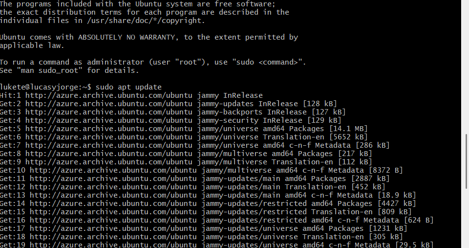
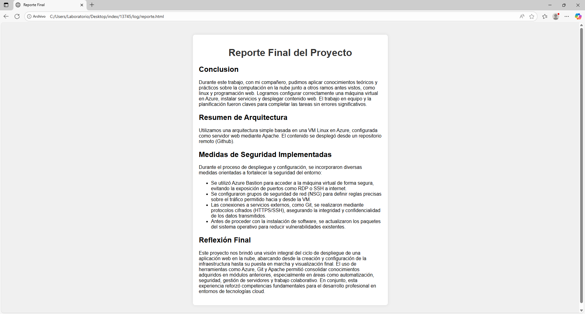

Bitácora de Actividades
| Hora | Acción realizada | Resultado / Error | Evidencia (captura) |
|---|---|---|---|
| 12:52 | Creación de la VM en Azure (B1s, Ubuntu) | VM creada correctamente |  |
| 13:00 | Conexion a VM | Conexion exitosa | |
| 13:03 | Update | Exitoso |  |
| 13:00 | Instalación de Apache | Servicio activo |  |
| 13:05 | Status apache | Apache activo correctamente |  |
| 13:10 | Estructura HTML | Correcta |  |
| 13:15 | Instalación git | Correcta |  |
| 13:16 | Subir HTML a git | Exitoso |  |
| 13:17 | Eliminar index original | Exitoso |  |
| 13:20 | Configuración de NSG | HTTP abierto, SSH restringido |  |
| 13:40 | Publicación de evidencias en /log/ |
Log y reporte accesibles vía navegador |  |